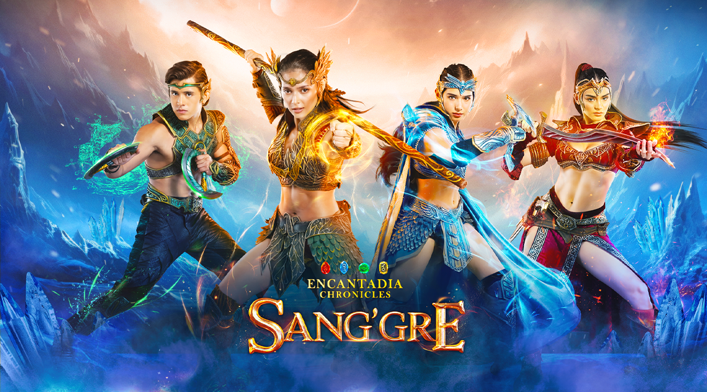
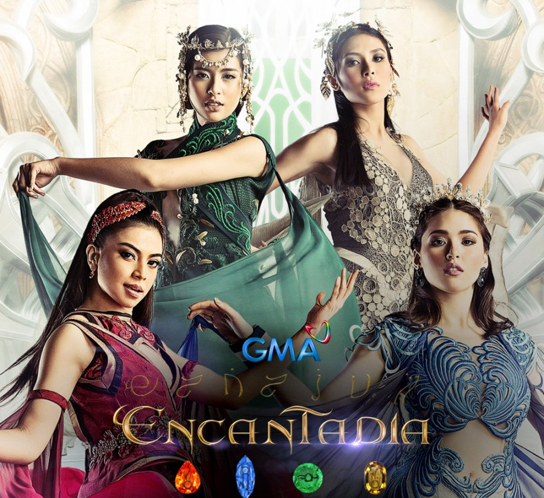
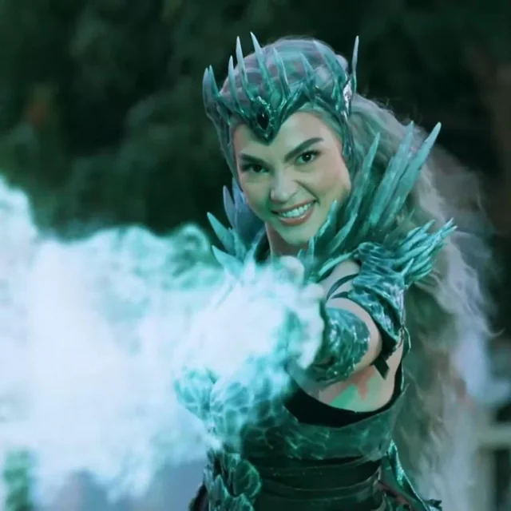
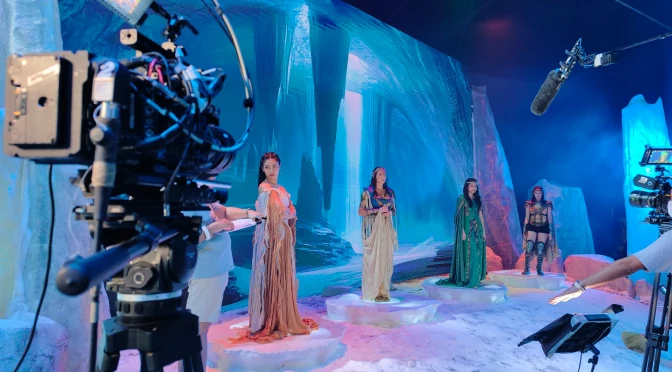

Avisala or A-miss-ala?: Anyare sa Sang'gre?
By Amir Jo-hanz B. Lopez | January 28, 2026

Sure naman ako na lahat tayo kinalakihan ang Encantadia. Isang
fantasy world na punong-puno ng powerful mages, women, and interesting
stories. Sure din ako na minsan na-imagine n'yo ang sarili n'yo bilang
Sang'gre. Personally, bias ko si Danaya dahil sobrang angas nya
makipaglaban. It didn't help na ang lakas at galing n'ya humawak ng
brilyante n'ya. Eh, ikaw sino bias mo sa mga Sang'gre?
Pagpasok sa Encantadia

Bilang isang batang baklita, fantasy na fantasy talaga naming
magkakaibigan ang paglalaban-laban kunwari. Kaya naman sobrang
na-excite ako nung malaman ko na magkakabagong series ang Encantadia.
Sobrang dami kong scenarios na na-i-imagine non. And syempre
nag-e-expect ako ng mas magandang VFX kumpara noong 2016.
But, BUTTT. Ngayong nasusubaybayan ko na ang bagong series nila,
medyo nadi-disappoint ako. At hindi 'yun kasalanan ng mga actor kasi
nandyan pa rin ang Hot Maria Clara na love na love ko.
"Ang problema lang is ang very inconsistent plot... to the point na
hindi na sya nag-aalign sa plot na kinalakihan ko."
Sang'gre-freshing Start?

Magsimula muna tayo sa positives. I LOVE THE
INTRODUCTION OF THE NEW SANG'GRES. As the new generation, ang
ganda na nag-break sila sa mold na puro babae lang ang dapat maging
Sang'gre. I love the introduction of the new villain, Mitena.
Somehow, na-intriga ako sa story n'ya as a discarded royal child na
pinatapon sa isang remote island. Gets na gets ko kung bakit s'ya
naging villain. I loved din na si Rhian Ramos ang gumanap sa
kanya dahil nabigyan n'ya ng buhay ang character ni Mitena. I was
really excited to meet these characters kasi na-tease na sial sa
finale ng 2016 series. All I can say is, they lived up to my
expectation. I also loved their own backstories. Terra is the
anak of Danaya pero naghiwalay sila because of the war in Encantadia.
Flamarra and Adamus are the tagapagmana talaga of their
respective brilyantes from their mothers. Lastly, si Deia naman
ang Sang'gre na walang dugong bughaw dahil s'ya ay from the land na
pinagmulan din ni Mitena. Pero, 'yan lang 'yung nagustuhan ko dito.
Writers Giving Nothing

What I hate about this naman is the
noticeable lack of attention sa mga details. Kumpara sa 2016
Encantadia with the grandiose sets and properly planned storylines,
2025 Encantadia failed to replicate the magic na dala ng dati. Instead
of having intricate set designs, they opted to use
LED screens which worked in some scenes pero sa iba, hindi
talaga s'ya nagb-blend. And inaalis n'ya ako sa fantasy. Isa pa nga
are the loopholes and the plot inconsistencies. Ang
pinakamasaklap sa lahat ay ang
pagdungis nila sa mga characters. Like, blatantly nilang shinow
na sinexually harass ng isang character sina Mira at Lira. At
this moment, they're trying to mend it by fixing the harasser's
character pero the damage has been done. Isa pa is that the writers
couldn't take criticisms especially when they're trending for having
obvious plot holes. They also started this series by killing the
iconic cast like Ybrahim, Mira, Lira, and Kassandra. They did
this to open up a new storyline for Devas, but hindi rin naman naging
maayos ang execution.
Ang Hatol
This is why ang panget ng new series ng Encantadia. Don't get me
wrong, I love love love the actors. But, they were so wasted dahil
lang sa improper and unplanned writing. Marami pang
inconsistensies in the plot but sobrang hahaba na ito. As someone na
kinalakihan ang Encantadia, it is such a disappointment. It takes away
the magic to all children and audience na attached to the show. This
is why it's important na magplano meticulously para maging maganda ang
kalalabasan. And that should apply to everything.
"Quality shouldn't be rushed especially to this magical world that
I've loved and learning to love again."
I hate this new series, but I hope it gets better from this.